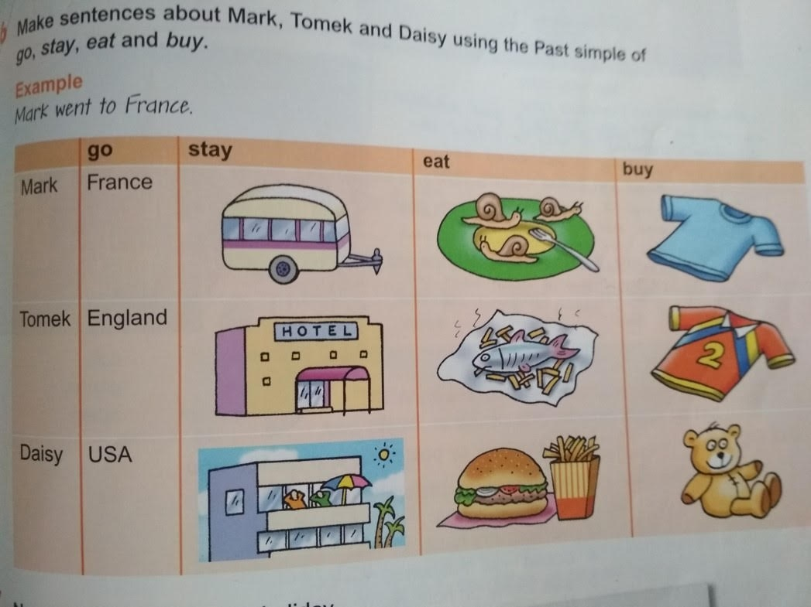

Klasa 8A
wychowawca Beata KlimowiczJĘZYK ANGIELSKI grupa 1 i 2
Topic: Sprawdzian wiadomości
Zadanie 1 Popatrz na rysunek i ułóż zdania o Tomku i Daisy, tak, jak w przykładzie. Używaj czasowniki ‘go, stay, eat, buy’ w czasie przeszłym.
Słowniczek:
holiday apartment – apartament wczasowy
Przykład:
Mark went to France. He stayed on a caravan site. He ate snails every day. He bought a blue T-shirt for his brother.
Tomek ……………………………………………………………….
Daisy ………………………………………………………………….
Zadanie 2 Napisz kilka zdań o swoich ostatnich wakacjach. Używaj proste zdania w czasie przeszłym prostym.
Uważaj na czasowniki regularne i nieregularne.
Where did you spend your last (summer/winter) holiday? Gdzie spędziłaś/łeś ostatnie wakacje?
How did you spend your holiday? What did you do?
OBRAZEK w załączniku

USPRAWNIANIE TECHNIK SZKOLNYCH- MATEMATYKA (Amelia, Patryk, Klaudia)
Zadania robią wszyscy uczniowie / na każdych zajęciach są różni uczniowie . Dwa razy rewalidacje ma Alan i Łukasz - dlatego mają więcej /. Rewalidacja jest na cały tydzień - 4 zajęcia.
1. Oblicz korzystając z Tw. Pitagorasa, mając :
a/ a=7cm, b= 8cm, c=?
b/ a=?, b=9cm, c=12cm
c/ a= 6cm, b=? c=10cm
d/ a= 2cm b= 3cm c=? dla Łukasza i Alana
e/ a=10cm b= 5cm c-? dla Łukasza i Alana
2. Oblicz pole trzeciego kwadratu, wiedząc , że:
a/ P1=? P2=12, P3=16
b/ P1=7 P2=10 P3=?
c/ P1=10 P2=? P3=20
d/ P1= 20 P2= 30 P3=? dla Łukasza i Alana
e/ P1= 5 P2= 10 P3=? dla Łukasza i Alana
Przypominam P1+P2=P3
np. P1=6, P2=10,
P1+P2=P3
6+10=16
3.Opisz i narysuj trójkąt prostokątny ,wzór na Tw. Pitagorasa.
4. Tabliczka mnożenia i dzielenia - ćwiczyć- Łukasz i Alan.
Pozdrawiam p. Zosia.
USPRAWNIANIE TECHNIK SZKOLNYCH- JĘZYK POLSKI ( Alan, Łukasz, Szymon, Wanessa)
- Napisz jak się czujesz? Dlaczego tak możesz się czuć?
- Dziś znów ciąg dalszy Waszych zmagań z tym co wiem, a nad czym muszę popracować. Napisz w zeszycie:
Jak poprawnie zapiszesz wyraz : ...ołota
– ch, – h
Jak poprawnie napiszesz : pro...ba:
– ź, – ś
Jak poprawnie napiszesz: ...semka
- ó, - u
Ułóż zdania z podanymi wyrazami. Sprawdź , czy poprawnie napisałeś - link :https://ikorektor.pl/
Prześlij swoją pracę na maila: zpsnysa@gmail.com
Pozdrawiam wszystkich moich uczniów ))
SOCJOTERAPIA ( Mateusz)
Temat: Moje zasady
Każdy człowiek powinien w życiu kierować się zasadami. Posiadanie swoich zasad świadczy o naszym charakterze, umiejętności samoorganizacji i dyscyplinie .Jakimi zasadami ty kierujesz się w życiu? Czy masz jakieś twarde zasady, których nie łamiesz i przestrzegasz wiernie? Zastanów się jak przestrzeganie zasad wpływa na nasze życie? Jak łamanie zasad wpływa na nasze życie? Powodzenia
LOGOPEDIA (Daniel, Karol)
Ćwiczenia oddechowe:
nabierz powietrza przez nos, wypuść przez nos,
nabierz powietrza prze nos, zatrzymaj na chwilę, wypuść przez nos,
nabierz powietrza przez nos, wypuść przez usta mówiąc jednocześnie /szszszsz/
Przeczytaj wiersz zwracając uwagę na poprawną wymowę.
Chrząszcz
W Szczebrzeszynie chrząszcz brzmi w trzcinie
W Szczebrzeszynie chrząszcz brzmi w trzcinie
I Szczebrzeszyn z tego słynie.
Wół go pyta: „Panie chrząszczu,
Po co pan tak brzęczy w gąszczu?”
„Jak to - po co? To jest praca,
Każda praca się opłaca”.
MATEMATYKA
Temat: Symetria względem prostej.
Szukaj: Figury symetryczne względem prostej Pi-stacja / obejrzyj film pod takim samym tytułem-zegar 11.06. zrób rysunek z kleksem, notatkę z filmu/trójkąty, prosta, figury oraz zapamiętaj - na końcu filmu//.
Pozdrawiam p. Zosia.
JĘZYK POLSKI
Temat: Jak pokonać otaczające nas ściany? Film animowany Piotra Dumały
Obejrzyj!
https://www.youtube.com/watch?v=6p5H3oTpbb0
NOTATKA
Film animowany – rodzaj filmu, w którym obrazów nie uzyskuje się na drodze rejestrowania zjawisk (w sposób ciągły) przy pomocy kamery. Źródłem danych jest często ręcznie rysowana grafika, która przedstawia na pojedynczych klatkach filmu kolejne fazy ruchu (stąd też film animowany określa się zazwyczaj mianem filmu rysunkowego lub kreskówki). Można w nim wykorzystywać również techniki animacji poklatkowej zdjęć poklatkowych. Obecnie coraz częściej stosuje się też grafikę i animację wspomagane komputerowo.
Wyświetlenie tak otrzymanych obrazów daje na ekranie wrażenie ruchu – ludzki układ nerwowy interpretuje szybko wyświetlane obrazy jako płynny ruch.
Film animowany od strony artystycznej może poruszać problematykę specyficzną dla filmu aktorskiego, może też, z powodu braku ograniczeń wizualnych otwierać szersze możliwości tematyczne.
Przeczytaj!
Film” Ściany”
Pełna niepokojącego nastroju opowieść o człowieku zamkniętym w pomieszczeniu bez wyjścia. Oczy bacznie obserwują ściany, mężczyzna nasłuchuje-łowi każdy szmer, porusza się, szukając możliwości wyzwolenia. W ponurym labiryncie korytarzy pojawia się inny mężczyzna i do otworu kamiennej skarbonki wrzuca monetę. Czlowiek siedzący we wnętrzu obserwuje spadajacy pieniądz. Zapada ciemność. Ofiarodawca zgasił palącą się żarówkę. Tworzywem klimatu filmu Piotra Dumaly -prócz jego refleksyjnych tresci-sa wysmakowane rysunek i sposób animacji, nieco przypominające "Łagodną" tego realizatora, a także spójną z obrazem, sugestywna muzyka Przemyslawa Gintrowskiego.
Kino Piotra Dumały czerpie z literatury (sam reżyser jest także pisarzem, m.in. twórcą intrygujących opowiadań). Inspiracją dla jego twórczości były przede wszystkim dzieła Franza Kafki i Fiodora Dostojewskiego.
Twórcą muzyki do filmu Ściany jest Przemysław Gintrowski — bard czasów stanu wojennego,
WOS
Temat: Problemy współczesnego świata.
Obejrzyjcie film: https://www.youtube.com/watch?v=peK_SytGWbo
NOTATKA:
Na świecie dokonał się podział na kraje rozwinięte i rozwijające się. Te pierwsze zajmują głównie północną część świata, dlatego nazywa się je bogatą Północą. Natomiast państwa rozwijające się leżą przede wszystkim w południowej części globu i tworzą tzw. biedne Południe.
EDUKACJA DLA BEZPIECZEŃSTWA
Temat: Oparzenia chemiczne.
Oparzenia chemiczne pojawiają się wskutek kontaktu ze skórą środków chemicznych mających właściwości żrące. Wywołują one zmiany na skórze i błonach śluzowych, przypominające oparzenia spowodowane czynnikiem cieplnym. W skrajnych przypadkach oparzenia chemiczne prowadzą do amputacji kończyny, a nawet śmierci.
Przeczytajcie tekst o oparzeniach chemicznych i zróbcie notatkę do zeszytu:
- Oparzenia chemiczne - charakterystyka
- Przyczyny oparzeń chemicznych
- Oparzenia chemiczne - objawy
- Pierwsza pomoc przy oparzeniach chemicznych
- Jak zapobiegać oparzeniom chemicznym?
https://argotiab.pl/wpis-blog/oparzenia-chemiczne-przyczyny-objawy-leczenie/
Obejrzyjcie filmy instruktażowe:
https://www.youtube.com/watch?v=YgLgwezNdhc
https://www.youtube.com/watch?v=UG3epiYGyU8
Powodzenia
FIZYKA
Temat : Obrazy otrzymywane przy pomocy soczewek skupiających (wypukłych)
zapisz do zeszytu:
W soczewkach otrzymujemy obrazy rzeczywiste na ekranie oraz pozorne w głębi soczewki. Obrazy mogą być proste, odwrócone, powiększone lub pomniejszone co jest zależne od odległości przedmiotu od soczewki (x-odległość przedmiotu, f- ogniskowa soczewki, F- ognisko soczewki). W soczewce dwuwypukłej obraz nie powstanie jeśli przedmiot umieścimy w jego ogniskowej
zad.1.
Narysuj konstrukcje powstawania obrazu (zaznacz ją schematycznie) w
soczewce wypukłej.
Przerysuj konstrukcje z filmów. poniżej z opisem zadania
https://www.youtube.com/watch?v=e_7Dg663KVU
https://www.youtube.com/watch?v=Y8Aw3Z2KeUU
WYCHOWANIE FIZYCZNE- CHŁOPCY
Temat : Kształtowanie ogólnej sprawności fizycznej
Uwagi wstępne :
- ćwicz tylko jak jesteś zdrowy
- ćwicz w stroju sportowym
- ćwicz przy otwartym/uchylonym oknie
- ćwiczenia główne poprzedź 10 min. rozgrzewką
- pamiętaj o rozluźnianiu mięśni po każdym ćwiczeniu
Propozycja ćwiczeń na dzisiejszych zajęciach:
- Biegnij w miejscu przez 3 - 4 minuty ( staraj się aby tempo biegu było równe)
- Stań w rozkroku, ramiona w dół
- krążenia ramion w przód ( 10 powtórzeń )
- krążenia ramion w tył ( 10x )
- krążenia ramion naprzemianstronne ( 10 x )
- Stojąc w rozkroku, opad tułowia ,ramiona w bok
- skręty tułowia w prawą i lewą stronę ( 20 powtórzeń )
- Leżąc przodem podpieramy się na wyprostowanych ramionach
- wytrzymaj podpór ( liczymy do 25 ) x 3
- Leżąc tyłem podpieramy się na wyprostowanych ramionach
- wytrzymaj podpór ( liczymy do 20 ) x 2
- Stojąc w lekkim rozkroku wykonaj 2 x 10 przysiadów, dłońmi dotykając
podłoża
- Wykonaj 2 x 10 podskoków
- obunóż
- na prawej nodze
- na lewej nodze
- Leżąc na plecach, ramiona splecione na klatce piersiowej wykonaj
2 x 15 brzuszków
- Ćwiczenie oddechowe- ramiona w górę ( wdech ),skłon ( wydech ) - 10x
Każdą serię wykonaj 2x , przerwa pomiędzy seriami ok. 10 min.
Dziękuję
ZAJĘCIA DODATKOWE ARTYSTYCZNE (Wanessa) 2h
Zajęcia Artystyczne. Lekcja 1.
Temat zajęć: Malowanie muzyki.
Zadanie: Obejrzyj filmik. Wykonaj rysunek do wysłuchanego utworu.
https://youtu.be/S8cgNhzeFtI
Powodzenia.
Zajęcia Artystyczne. Lekcja 2.
Zadanie. Na dużym szarym arkuszu namaluj farbami ulubioną bajkową postać.
ZAJECIA DODATKOWE-PLASTYKA (Amelia, Klaudia)
OBEJRZYJ uważnie krótki film :
https://www.youtube.com/watch?v=7M0dZF3eBqU
jest to następny pomysł na dekoracyjny wzór
możesz go skopiować /narysować tak samo/
albo wymyślić własny.
USPRAWNIANIE TECHNIK SZKOLNYCH- JĘZYK POLSKI (Amelia, Klaudia)
- Napisz jak się czujesz? Dlaczego tak możesz się czuć?
- Dziś znów ciąg dalszy Waszych zmagań z tym co wiem, a nad czym muszę popracować. Napisz w zeszycie:
Jak poprawnie zapiszesz wyraz : ...ołota
– ch, – h
Jak poprawnie napiszesz : pro...ba:
– ź, – ś
Jak poprawnie napiszesz: ...semka
- ó, - u
Ułóż zdania z podanymi wyrazami. Sprawdź , czy poprawnie napisałeś - link :
https://ikorektor.pl/
Prześlij swoją pracę na maila: zpsnysa@gmail.com
Pozdrawiam wszystkich moich uczniów ))
JĘZYK ANGIELSKI -grupa 1 i 2
Topic: Revision Unit – Powtórzenie wiadomości
Zadanie 1 Uzupełnij zdania czasownikami w czasie przeszłym prostym. Już wiemy, że czasowniki regularne maja końcówki ‘-d’, ‘-ed’ w czasie przeszłym.
Przykład:
I don’t usually stay in hotels, but I stayed in a hotel last week.
I don’t usually cook, but I ……………… when I was on holiday.
I don’t usually play tennis, but I ……………. tennis when I was in France.
Dad doesn’t usually watch TV, but he …………… TV a lot last summer.
Zadanie 2 Przetłumacz zdania na język polski.
Powtórz czasowniki, które mają nieregularną formę w czasie przeszłym prostym.
Słowniczek:
sit – siedzieć sat [set] – siedział/a, … (przeszły czas prosty)
by [baj] – przy
get up – wstawać got up – wstał/a
1 It was warm and sunny so we sat by the pool.
2 I bought a present for my mum in the souvenir shop.
3 I swam in the lake.
4 We got up at eight.
5 He saw the Eiffel Tower.
6 We spent a week in Spain.
7 We went to Italy for a holiday last summer.
8 They made pizza for dinner yesterday.
9 I wrote a letter to my friend Tom.
Zadanie 3 Kliknij na link poniżej, posłuchaj nagrania i odpowiedz na pytanie.
What did the children do yesterday? Co robiły dzieci wczoraj?
Słowniczek:
read [riid] czytać read [red] - czytał/a (ta sama
forma w czasie teraźniejszym i przeszłym)
fly [flaj] – latać flew [fluu] - latał/a/y...
https://www.youtube.com/watch?v=aqMpREQdnCY
INFORMATYKA
Temat: Tworzenie strony internetowej z wykorzystaniem znaczników HTML
- Otwórz podręcznik online https://ebook.migra.pl/dlaucznia.php?book=68
Zapoznaj się z materiałem str. 210 – 211 (pkt 1)
Odpowiedz na pytanie:
Do czego służy język znaczników HTML?
Odpowiedź napisz na kartce, zrób zdjęcie i przyślij mi na mojego e-maila lub na nr telefonu.
JĘZYK POLSKI
Temat : Czego nie dowiemy się o człowieku z urzędowego życiorysu? Wisława Szymborska „ Pisanie życiorysu”
Przeczytaj wiersz
Wisława Szymborska
PISANIE ŻYCIORYSU
Co trzeba?
Trzeba napisać podanie,
a do podania dołączyć życiorys.
Bez względu na długość życia
życiorys powinien być krótki.
Obowiązuje zwięzłość i selekcja faktów.
Zamiana krajobrazów na adresy
i chwiejnych wspomnień w nieruchome daty.
Z wszystkich miłości starczy ślubna,
a z dzieci tylko urodzone.
Ważniejsze, kto cię zna, niż kogo znasz.
Podróże tylko jeśli zagraniczne.
Przynależność do czego, ale nie dlaczego.
Odznaczenia bez za co.
Pisz tak, jakbyś z sobą nigdy nie rozmawiał
i omijał z daleka.
Pomiń milczeniem psy, koty i ptaki,
pamiątkowe rupiecie, przyjaciół i sny.
Raczej cena niż wartość
i tytuł niż treść.
Raczej już numer butów, niż dokąd on idzie,
ten za kogo uchodzisz.
Do tego fotografia z odsłoniętym uchem.
Liczy się jego kształt, nie to, co słychać.
Co słychać?
Łomot maszyn, które mielą papier.
Więcej o poetce
https://www.szymborska.org.pl/
NOTATKA
Wiersz Wisławy Szymborskiej „Pisanie życiorysu” zawiera refleksję osoby mówiącej dotyczącą tego, jakie wartości kierują współcześnie człowiekiem. W swych rozważaniach poetka dochodzi do wniosku, że są one niezgodne z tym, co z natury ludzkie. Utwór rozpoczyna się pytaniem: „Co trzeba?”, a odpowiedź wskazuje, co obecnie jest ważne: „Trzeba napisać podanie / a do podania napisać życiorys”. Właśnie „podanie” staje się znakiem naszych czasów, w których liczą tylko relacje oficjalne, nastawione na osiąganie korzyści: „Ważniejsze, kto cię zna, niż kogo znasz / Podróże tylko jeśli zagraniczne”. Dostosowany do takiej opcji życiorys musi „być krótki” i to „bez względu na długość życia”. Szymborska pisze, że współczesny zbiurokratyzowany świat redukuje wiedzę o człowieku, do suchych faktów, tak jak w urzędowym życiorysie. Człowieczy umysł staje się niczym wobec „adresów” i „nieruchomych dat”. A przecież człowiek to także pamięć o „krajobrazach” i „chwiejne wspomnienia”, bagatelizowane w okrutnym świecie oficjalności. Tę oficjalność podkreślają sformułowania „trzeba” i „obowiązuje”, krótkie „pisz” i „pomiń”. Tak użyte czasowniki eksponują ograniczenie ludzkiej egzystencji do bycia petentem.
Pozornie lakoniczny i beznamiętny opis poetka kończy równie lakonicznym pytaniem „Co słychać?”. To pytanie w relacjach międzyludzkich jest objawem sympatii, życzliwego zainteresowania czy choćby chęci zwykłego nawiązania kontaktu z drugim. Jednak w przedstawionym w wierszu świecie brzmi co najmniej ironicznie, jeśli nie złowieszczo. Ale już na pewno złowieszczo brzmi odpowiedź. Słychać bowiem „łomot maszyn, które mielą papier”, ten papier do którego sprowadziła się nasza egzystencja.
Szymborska nie moralizuje , pokazuje, ku czemu świat zmierza. Przede wszystkim jest to przekaz skierowany do każdego czytelnika z osobna. Znajdujemy tu pytanie o to, do jakiego stopnia jest się już elementem tej rzeczywistości, w której ważniejszy okazuje się „raczej już numer butów, niż dokąd on idzie”. Poetka zmusza do zastanowienia się, na ile jeszcze istota ludzka jest sobą, a na ile staje się tym, „za kogo uchodzi”.
MATEMATYKA
Temat: Sprawdzian -część 2
Zadania do wykonania.
1. Narysuj o dowolnych wymiarach:
a/ sześcian,
b/ prostopadłościan,
c/ graniastosłup / inny/ ,
d/ ostrosłup.
2. Narysuj dwie dowolne siatki z zadania nr 1.
3. Napisz wzory na pole i objętość brył z zadania nr1.
Zrobione zadania przesłać 21.05.2020 do godziny 18
CHEMIA
Temat: Sacharoza
Obejrzyj filmik
https://www.youtube.com/watch?v=h8kAIwBkUIA
Opisz właściwości sacharozy.
Obejrzyj filmik
https://www.youtube.com/watch?v=zFf5F1_iThA&t=38s
Napisz przebieg reakcji hydrolizy sacharozy.
Obejrzyj filmik
https://www.youtube.com/watch?v=UJBrxAZ4WgU
Opisz jak przebiegała reakcja zwęglania cukru - co połączono, co się działo, jaki był efekt końcowy.
ZAJĘCIA WYCHOWAWCZE
Temat: Wspólne dobro jako podstawa do życia w społeczeństwie
Posłuchaj
https://www.youtube.com/watch?v=SX2IOQ5aGXk
https://www.youtube.com/watch?v=-JIrvxJheRA
JĘZYK POLSKI
Temat: Prezentujemy nasze autoportrety
Notatka:
Autoportret- portret własny artysty wykonany przez niego samego; może nim być obraz, rzeźba, fotografia.
Pierwsze autoportrety pojawiły się w średniowieczu, a rozpowszechniły się pod koniec tej epoki. Na początku renesansu artyści swoje autoportrety włączali do malowanych przez siebie scen. Wraz z zanikaniem pojmowania roli artysty jako rzemieślnika, wykształcał się samodzielny autoportret (np. u Albrechta Dürera).
Wielu artystów malowało autoportrety niemal przez całe swoje życie, tworząc w ten sposób cykle swoich podobizn, m.in. Rembrandt, Vincent van Gogh i Stanisław Wyspiański.
Artyści na autoportretach ukazują się w bardzo różny sposób. Typowe jest przedstawienie przy pracy, w warsztacie, z atrybutami sztuki albo z rodziną lub przyjaciółmi. Zdarza się także, że artyści przedstawiają się jako postaci historyczne, biblijne albo mitologiczne
Zadanie:
Wykonaj swój autoportret. Zadbaj o to, by kształt autoportretu, jego kolorystyka i poszczególne elementy oddawały twoją osobowość.
Czas wykonania do 25 maja
https://www.youtube.com/watch?v=U_sWlJHnvrM
MATEMATYKA
Matematyka - Temat: Sprawdzian - część 2
Zadania do wykonania.
1. Oblicz pole powierzchni ostrosłupa, którego podstawą jest prostokąt o wymiarach a= 6cm, b=8cm, a krawędź boczna ma 15cm / rysunek pomocniczy /.
2. Oblicz objętość ostrosłupa o wysokości 8cm, którego podstawą jest trójkąt równoramienny o bokach 5cm, 5cm i 6cm /rysunek pomocniczy /.
Zrobione zadania przesłać 20.05.2020 do godziny 18.00.
WYCHOWANIE FIZYCZNE – DZIEWCZYNY 2 h
Temat: Technika i taktyka piłki siatkowej
zostańwdomu#trenuj w domu !!
Przypominam o zasadach bhp podczas ćwiczeń w domu, tak jak na lekcjach w-f w szkole. Proszę również pamiętać, że ćwiczymy tylko i wyłącznie jak jesteśmy zdrowi.
Pamiętajmy przed rozpoczęciem ćwiczeń ,aby zrobić 10 minutową rozgrzewkę (ćwiczenia pamiętamy z lekcji)
Potrzebne przybory: piłka
Ćwiczymy w domu lub najlepiej na świeżym powietrzu.
Proszę dokładnie obejrzeć filmik. Spróbować powtórzyć każde ćwiczenie po 5 razy.
USPRAWNIANIE TECHNIK SZKOLNYCH -MATEMATYKA
Zadania robią wszyscy uczniowie / na każdych zajęciach są różni uczniowie . Dwa razy rewalidacje ma Alan i Łukasz - dlatego mają więcej /. Rewalidacja jest na cały tydzień - 4 zajęcia.
1. Oblicz korzystając z Tw. Pitagorasa, mając :
a/ a=7cm, b= 8cm, c=?
b/ a=?, b=9cm, c=12cm
c/ a= 6cm, b=? c=10cm
d/ a= 2cm b= 3cm c=? dla Łukasza i Alana
e/ a=10cm b= 5cm c-? dla Łukasza i Alana
2. Oblicz pole trzeciego kwadratu, wiedząc , że:
a/ P1=? P2=12, P3=16
b/ P1=7 P2=10 P3=?
c/ P1=10 P2=? P3=20
d/ P1= 20 P2= 30 P3=? dla Łukasza i Alana
e/ P1= 5 P2= 10 P3=? dla Łukasza i Alana
Przypominam P1+P2=P3
np. P1=6, P2=10,
P1+P2=P3
6+10=16
3.Opisz i narysuj trójkąt prostokątny ,wzór na Tw. Pitagorasa.
4. Tabliczka mnożenia i dzielenia - ćwiczyć- Łukasz i Alan.
Pozdrawiam p. Zosia.
BFB -(Szymon)
Zadania dla Szymona wysłane zostały bezpośrednio na adres mailowy
USPRAWNIANIE TECHNIK SZKOLNYCH – JĘZYK POLSKI 2h ( Mateusz, Karol, Daniel, Patryk, Szymon, Łukasz)
Powtarzamy wiadomości do egzaminu
CHEMIA
Temat :Glukoza i fruktoza
Obejrzyj filmik
https://www.youtube.com/watch?v=6l2KzwPvKZM&t=45s
Napisz jak odróżnić glukozę od fruktozy.
Obejrzyj filmik
https://www.youtube.com/watch?v=Nnv1HIi8tHg
Jakie odczynniki zastosowano w doświadczeniu?
Narysuj doświadczenie.
GEOGRAFIA
Temat: Prace badawcze w Arktyce i Antarktyce.
Przeczytaj:
Na mapie obszarów podbiegunowych można dostrzec wiele nazw geograficznych łączących się z nazwiskami lub imionami. Pochodzą one od pierwszych odkrywców tych terenów i są dowodem uznania dla ich osiągnięć. Główny okres badań obszarów polarnych przypadł na XIX wiek i początek XX.
Za zdobywcę bieguna północnego uznaje się Amerykanina Roberta Edwina Peary’ego. Był on doświadczonym badaczem obszarów północnych. 6 kwietnia 1909 roku Peary po dokonaniu pomiarów stwierdził, że jest na biegunie północnym.
Badania Antarktydy rozpoczęły się dopiero pod koniec XIX wieku. Jedną z pierwszych wypraw była belgijska ekspedycja na statku Belgica w latach 1898–1899. Wzięło w niej udział m.in. dwóch Polaków – Henryk Arctowski i Antoni Bolesław Dobrowolski. Pierwszym oficerem na Belgice był Norweg Roald Amundsen. To on w latach 1910–1912 kierował norweską wyprawą, której uczestnicy jako pierwsi 15 grudnia 1911 roku dotarli do bieguna południowego. Miesiąc później, 18 stycznia 1912 roku, do bieguna doszli uczestnicy angielskiej wyprawy dowodzonej przez Roberta Scotta. Pięciu członków tej wyprawy, w tym Scott, zginęło z wyczerpania w drodze powrotnej. Wyprawa poszukiwawcza odnalazła namiot, w którym były zamarznięte ciała trzech Anglików oraz dziennik kapitana Scotta.
Odpowiedz na pytania:
1) kogo uważa się za zdobywcę bieguna północnego( podaj imię, nazwisko, narodowość, rok zdobycia bieguna)
2) podaj nazwiska Polaków badających Antarktydę
3) kto i w którym roku zdobył biegun południowy
Zapisz w zeszycie notatkę:
Sytuacja prawna obszarów polarnych:
Sytuacja prawna na Oceanie Arktycznym poza przybrzeżną strefą 200 mil morskich nie jest w pełni uregulowana. Obszar na południe od 60°S objęty jest Układem Antarktycznym, w którym wyrażona jest konieczność ochrony zasobów przyrodniczych i wykorzystania Antarktydy jedynie dla celów naukowych i pokojowych. Na Antarktydzie działa wiele stacji naukowych i badawczych.
Zobaczcie jak wygląda polska stacja im. H. Arctowskiego
https://www.youtube.com/watch?v=z3Cls509Q-M
Jakie badania prowadziły badaczki z Polski?
HISTORIA
Temat: Upadek PRL i narodziny III RP cz2
Obejrzyj film: https://www.youtube.com/watch?v=LFRMgnYcY6I
Notatka:
Tadeusz Mazowiecki, powołany 24 sierpnia 1989 r. przez Sejm na urząd premiera, był pierwszym niekomunistycznym szefem rządu w Polsce po II wojnie światowej. Do listopada 1990 r. przeprowadził on reformy gospodarcze i dekomunizację państwa, stając się symbolem przemian ustrojowych w Polsce.
W expose wygłoszonym w Sejmie Mazowiecki podkreślał, że pragnie być premierem rządu wszystkich Polaków. W dalszej części przemówienia Mazowiecki wyraził zaniepokojenie stanem gospodarki narodowej. W związku z tym zapowiedział reformy obejmujące powrót do gospodarki rynkowej, zdławienie inflacji, zrównoważenie bilansu płatniczego, poprawę zaopatrzenia oraz demonopolizację struktur obsługujących rynek żywnościowy. Rząd Mazowieckiego tworzyło 24 ministrów.
RELIGIA
„Ojciec Pocieszyciela da wam”
Z białych, specjalnie poskładanych kartek wycinamy grupę ludzi trzymających się za ręce – znak, że się kochają. Przyklejamy je na kolorowy papier, rysujemy buzie, robimy ubranka, na środku lepimy z plasteliny płomień – znak obecnego Ducha Świętego, Pocieszyciela. Wszyscy są razem dzięki Niemu.
materiały:
biały papier, kolorowe kartony, papiery ozdobne do zrobienia ubranek, trochę czerwonej plasteliny, kleje, nożyczki
FIZYKA
Temat : Soczewki
zapisz do zeszytu:
Rozróżniamy soczewki wypukłe (najgrubsze w środku) i wklęsłe. Gdy równoległa wiązka światła pada na soczewkę wypukłą po przejściu przez nią przechodzi przez jeden punkt zwany ogniskiem soczewki. Soczewka wypukła to soczewka skupiająca.
Gdy równoległa wiązka światła pada na soczewkę wklęsłą po przejściu przez nią rozprasza się.
Soczewka wklęsła to soczewka rozpraszająca.
zad.1.
zobacz film : https://vod.tvp.pl/video/szkola-z-tvp-klasa-8,fizyka-lekcja-1-30042020,47735252
Odpowiedz na pytania:
1 Dlaczego nie wolno zostawiać szkła w lesie ?
- Gdzie znalazły zastosowanie soczewki ?
Zad.2.
Narysuj na podstawie filmu https://www.youtube.com/watch?v=hbbikGz5hmQ
przebieg promieni światła przez soczewkę wypukłą i wklęsłą
JĘZYK POLSKI
Temat: Uwaga! Błąd językowy!
Zadanie
Przeczytajcie i wypiszcie różne błędy językowe .
https://encenc.pl/blad-jezykowy/
Przeczytajcie, zapamiętajcie i … nie popełniajcie ich!
https://e-polish.eu/blog/znane-i-lubiane-bledy-jezykowe-w-polskiej-mowie/
Notatka
Błąd językowy- nieświadome odstępstwo od normy językowej. Jeśli wskutek błędu dochodzi do zaburzenia komunikacji, wypowiedx staje się niejasna, niezrozumiała, błąd ma charakter rażący.
BIOLOGIA
Temat : Racjonalne gospodarowanie zasobami przyrody.
Wszystkie wykorzystywane przez człowieka składniki przyrody np. woda, pożywienie, energia słońca , paliwa kopalne, rudy metali nazywamy zasobami przyrody.
Zasoby przyrody dzielimy na :
- Niewyczerpywalne : energia słońca, energia wiatru, energia geotermalna(energia wnętrza ziemi)
- Wyczerpywalne:
A/ odnawialne - to te które, na skutek eksploatacji wyczerpują się np. organizmy żywe zmniejsza się ich liczba, albo zmieniają swoje właściwości np. woda, powietrze, gleba. Jednak jeśli tempo ich wykorzystywania nie jest zbyt duże są one w stanie się odtworzyć np. organizmy żywe rozmnażają się, powietrze oczyszcza się dzięki działalności roślin, woda oczyszcza się dzięki działalności mikroorganizmów oraz filtracji przez naturalne warstwy żwirów i piasków.
B/nieodnawialne - to te których zasoby na skutek eksploatacji stale zmniejszają się, aż do
ostatecznego wyczerpania.
Wzrost liczby ludności i rozwój przemysłu sprawiają ,że rośnie zapotrzebowanie na zasoby przyrody. Ponadto intensywna gospodarka prowadzi do zanieczyszczenia środowiska. W celu ochrony zasobów przyrody stworzono zasadę zrównoważonego rozwoju, która zakłada, że zaspokajanie potrzeb ludności nie może zmniejszać zasobów przyrody. W tym celu np. ogranicza się wycinkę lasów, połów ryb, paliwa kopalne zastępuje się pozyskiwaniem energii słonecznej , wiatrowej, fal morskich, ochrona wód i powietrza przed zanieczyszczeniami.
Zadanie : napisz i wyślij na adres : jatyczka@gmail.com
Jak ty na co dzień możesz chronić zasoby przyrody.
WOS
Temat: Polska w Unii Europejskiej.
Obejrzyj film: https://www.youtube.com/watch?v=KiEJIjZxjXM
NOTATKA:
Polska wstąpiła do Unii Europejskiej 1 maja 2004r. Wcześniej w 2003r., odbyło się ogólnokrajowe referendum, w którym 77% głosujących poparło wejście naszego państwa do UE. Po przystąpieniu do Rzeczypospolitej Polskiej do Unii Europejskiej:
- Polacy stali się obywatelami UE, co oznacza, że otrzymali dodatkowe uprawnienia
- nasz kraj zyskał możliwość szybszego rozwoju, m.in. dzięki napływowi funduszy unijnych
- wzrosło znaczenie Polski w Europie i na świecie
Polska – podobnie jak pozostałe państwa członkowskie – stara się umacniać swoją pozycję w organizacji i bronić swoich interesów.
TECHNIKA grupa1
Temat:
Budowa i zasada działania transformatora zajęcia na dzień 19 05 2020
Dzień dobry , dziś kolejny dzień naszej przygody z prądem elektrycznym. Jak wiecie , nie wszystkie urządzenia zasilane są prądem elektrycznym o napięciu 230V. W naszym otoczeniu jest wiele urządzeń , które wymagają znacznie niższego napięcia. Najprościej mówiąc, taką funkcję spełnia transformator. obejrzyj proszę film, na którym w sposób prosty pokazana jest zasada jego działania https://www.youtube.com/watch?v=23hYYEcUI3E
PAMIĘTAJCIE PROSZĘ , NIE WYKONUJCIE ŻADNYCH PRAC ANI EKSPERYMENTóW Z PRĄDEM ELEKTRYCZNYM , NASZE ZAJĘCIA TO TEORIA , PRAKTYCZNA CZEŚĆ TYLKO W PRACOWNI , DZIŚ PODSTATWY. POZDRAWIAM. w razie pytań lub wątpliwości , znacie mój nr telefonu , jestem również dostępny dla was na whats app, oraz na komunikatorze mesenger
TECHNIKA grupa 2
Przepisz do zeszytu temat lekcji i podpunkty
Temat: Przygotowujemy się do gotowania
- Metody i techniki sporządzania potraw
1.Obróbka wstępna
-sortowanie
- mycie
- czyszczenie
-płukanie
-rozdrabnianie
-porcjowanie
-formowanie
2.Obróbka cieplna
-gotowanie
-smażenie
-pieczenie
-duszenie
-blanszowanie
-grillowanie
Zadanie 1. Znajdź w książce kucharskiej lub w Internecie przepis na zupę pomidorową i przepisz lub wklej go do zeszytu.
Zadanie 2. Napisz w zeszycie jaki rodzaj obróbki termicznej stosujemy podczas przygotowania zupy pomidorowej.
ZAJĘCIA DODATKOWE- TECHNIKA grupa 1
Temat:
Budowa lutownicy transformatorowej. technika godzina dyrektorska
Teraz zobaczcie jedno z zastosowań transformatora. Tego typu lutownice mamy w naszej pracowni. https://www.youtube.com/watch?v=R8yRthzGGVE
teoretyczne podstawy lutowania poznamy na przyszłych zajęciach. PAMIĘTAMY , W DOMACH TYLKO TEORIA, JĄ OPANUJCIE , PRAKTYCZNE DZIAŁANIA TYLKO W NASZEJ PRACOWNI. Pozdrawiam
ZAJĘCIA DODATKOWE- grupa 2
Temat – Ozdobne prace z papieru –
Dzisiaj przygotujemy potrzebne materiały do wykonania prac z papieru z wykorzystaniem techniki -quilling. Żeby wykonać pracę stosując tą technikę musimy mieć dużo kolorowych paseczków o różnej szerokości np. 0,5 cm lub 1 cm.
Obejrzyj film do 1:00 minuty filmu.
Dowiesz się jakie papierowe paseczki przygotować.
https://www.youtube.com/watch?v=n-cA7KLqHDM
Zadanie: Za pomocą linijki i ołówka narysuj na kolorowych kartkach linie w odstępach 0,5 cm lub 1 cm. Wytnij kolorowe paseczki. Pamiętaj, że musi ich być dużo i muszą być w różnych kolorach.
Zachowaj bezpieczeństwo podczas posługiwania się nożyczkami.
JEZYK POLSKI
Temat: Kiedy życie można nazwać wartościowym? Omawiamy wiersz Zbigniewa Herberta
Posłuchaj o p0ecie
https://www.youtube.com/watch?v=U3-ML5Lf7e8
Przeczytaj wiersz
https://literatura.wywrota.pl/wiersz-klasyka/42034-zbigniew-herbert-zyciorys.html
NOTATKA
W wierszu dowiadujemy się o życiu bohatera z jego życiorysu. Oceniał swoje życie jako normalne, przeciętne. Nade wszystko bohater wiersza starał się być dobry, nie ulegał podszeptom, nie robił głupstw. Jednak nie myślał o sobie dobrze : „ To prawda -byłem wiecznie blady….” W swoim życiu nie wykorzystał wszystkich swoich możliwości, zdał sobie z tego sprawę dopiero będąc starym, schorowanym człowiekiem.
Zadanie
Zastanów się - co chcesz osiągnąć w swoim życiu i do czego dążysz?
HISTORIA
Temat: Upadek PRL i narodziny III RP
Obejrzyj film: https://www.youtube.com/watch?v=nTEspBNM8Z0
Notatka:
Okres rządów komunistycznych w Polsce ma swój początek już w 1944 roku. Od tego momentu szereg decyzji politycznych, społecznych i ekonomicznych zapadał nie w stolicy państwa polskiego lecz Moskwie-stolicy Związku Socjalistycznych Republik Radzieckich. Taki stan rzeczy utrzymywał się aż do roku 1989. Dekada 1980-1990 jest przez wielu historyków uważana jest za najbardziej gwałtowną pod względem przemian w historii Polski.
Obrady okrągłego stołu, rozpoczęte 6 lutego 1989 r. w Warszawie. Po trwających przez kilka miesięcy rozmowach przygotowawczych, ekipa Jaruzelskiego zgodziła się w końcu by przy okrągłym stole. W trakcie trwających blisko dwa miesiące negocjacji m.in. wolne wybory do Senatu – była to klęska dla komunistów. Wybory do parlamentu z 4 czerwca 1989 r., których zasady określono przy okrągłym stole, zakończyły się bowiem miażdżącym zwycięstwem Komitetu Obywatelskiego „Solidarności”. Po upływie kilku kolejnych tygodni zaowocowało to powstaniem rządu Tadeusza Mazowieckiego, a następnie załamaniem trwających od ponad czterdziestu lat monopolistycznych rządów PZPR.
MATEMATYKA
Temat: Sprawdzian
Witam.
Dzisiaj sprawdzian, oto zadania do wykonania. Sprawdzian jest cząstkowy, by Was nie przemęczyć. Zwrot zadań do18.05.2020r. do godziny 15.00. Przypominam, że sprawdzian jest oceniany.
Zadania do wykonania.
1 . Czy 100l wody mieści się w pojemniku w kształcie sześcianu o wymiarach a=5dm ? TAK-NIE / należy zrobić obliczenia , rysunek pomocniczy /.
2. Ile blachy należy kupić aby wykonać pojemnik w kształcie sześcianu o wymiarach a=5cm? / obliczenia, rysunek pomocniczy /.
3. Ile soku mieści się w kartonie w kształcie prostopadłościanu o wymiarach a=3dm, b= 2dm, c=12dm ?/ obliczenia, rysunek pomocniczy /?
4. Czy na wykonanie pudełka w kształcie prostopadłościanu o wymiarach a=3cm, b=2cm, c= 12cm, wystarczy 150cm2 kartonu ? TAK-NIE / obliczenia, rysunek/.
Pozdrawiam p. Zosia.
WYCHOWANIE FIZYCZNE- DZIEWCZYNY
Temat :Nauka podstawowego kroku POLKI
zostańwdomu#trenuj w domu !!
Przypominam o zasadach bhp podczas ćwiczeń w domu ,tak jak na lekcjach w-f w szkole. Proszę również pamiętać, że ćwiczymy tylko i wyłącznie jak jesteśmy zdrowi.
Pamiętajmy przed rozpoczęciem ćwiczeń ,aby zrobić 10 minutową rozgrzewkę (ćwiczenia pamiętamy z lekcji)
Proszę dokładnie ćwiczyć z autorami. Powtarzać kroki na "sucho" liczenie a później z muzyką.
WYCHOWANIE FIZYCZNE- CHŁOPCY
Temat : Ćwiczenia ogólnorozwojowe
Uwagi wstępne :
- ćwicz tylko jak jesteś zdrowy
- staraj się ćwiczyć w stroju sportowym
- przed ćwiczeniami przewietrz pokój
- ćwiczenia poprzedź 10 min. rozgrzewką
Propozycja ćwiczeń :
- Bieg w miejscu z wysokim unoszeniem kolan(liczymy do 30)
- Krążenia ramion w przód i w tył ( 10 powtórzeń)
- Unosimy naprzemiennie kolana z równoczesnym dotknięciem łokcia,
lewe kolano-prawy łokieć i odwrotnie ( 10 powtórzeń)
- Wykonujemy 10 pajacyków
- Stojąc w rozkroku, pochylamy się i wykonujemy skrętoskłony raz do
jednej, raz do drugiej nogi - po 5
- W lekkim rozkroku wykonaj 2x 10 przysiadów
- Przechodzimy do leżenia przodem ,podpieramy się na wyprostowanych
ramionach i wykonujemy 2x10 pompek
- W leżeniu tyłem, ramiona w bok , wykonaj nogami nożyce (pionowe,
poziome) po 10 powtórzeń
- Ćwiczenia uspokajające - leżąc tyłem, nogi podkurczone, rozluźniamy
mięśnie , oczy zamknięte ( liczymy do 60 )
Każdą serię powtarzamy 2x,przerwa pomiędzy seriami ok. 10 min.
Na koniec zadanie domowe. Proszę o podanie prawidłowych odpowiedzi
i wysłanie ich na mojego maila ( szkolazbyszko.pl@interia.pl) do 22.05
- W jakiej konkurencji lekkoatletycznej używane są bloki startowe
- Ilu zawodników ( na boisku) liczy drużyna piłki ręcznej
- Skłon tułowia w przód ( z leżenia tyłem ,nogi ugięte w kolanach)
to ćwiczenie wzmacniające mięśnie ?
Zadanie podlega ocenie z wychowania fizycznego. Dziękuję
JĘZYK ANGIELSKI
Topic: My last holiday – Moje ostatnie wakacje
Zadanie 1 Powtórz czasowniki z poprzednich lekcji.
Przeczytaj dialog, podkreśl czasowniki w czasie przeszłym prostym i przetłumacz tekst.
Słowniczek (niektóre wyrazy już znasz):
for a week – na tydzień
caravan site [kerewen sajt] – pole namiotowe
caravan [kerewen] - przyczepa kempingowa
lake [lejk] – jezioro
weather [łeder] - pogoda
arrive [erajw] – przyjechać, przyjeżdżać
just [dżast] – tylko
rain – padać
all [ol] – cały
look like [luk lajk] – wyglądać, jak
boring – nudny
need [niid] – potrzebować
terrible [teribel] – okropne, straszne
Sarah Hi Mark. How was your holiday?
Mark It was OK. We went to France for a week. We stayed on a caravan site near a lake.
Sarah What was the weather like?
Mark It was sunny and warm when we arrived on Saturday.
Sarah So why was it just OK?
Mark Well, I wanted to swim in the lake on Sunday, but it started to rain. It rained all week. The caravan site looked like a swimming pool.
Sarah Oh! How terrible!
Mark It was. We stayed in the caravan and played games all week. It was really boring. I need a holiday.
Uzupełnij zdania brakującymi informacjami z tekstu.
1 Mark went to France.
2 He went for a ..........................
3 He stayed on a …………………………..
4 The weather was ………………….. and …………………. on Saturday.
5 On Sunday it started to ……………………….
6 It rained all …………………………
7 He …………………. games in the caravan.
8 It was ……………………….. .
ZAJĘCIA DODATKOWE- INFORMATYKA ( Klaudia, Patryk)
Temat: Kartka okolicznościowa na Dzień Matki.
Zaprojektuj w edytorze tekstu LibreOffice Writer ozdobną kartkę z życzeniami na Dzień Matki. Do wykonania ozdobnego napisu użyj narzędzia Fontwork… znajdującego się w Menu Wstaw. Instrukcje znajdziesz tutaj: http://www.zpsnysa.pl/cwiczenia4.html
Napisz życzenia wstaw ładny obrazek.
Jeżeli nie masz komputera odpowiedz:
Jak wstawić ozdobny napis do tekstu?
Odpowiedź napisz na kartce, zrób zdjęcie i prześlij jako mms telefonem.
SOCJOTERAPIA (Amelia)
Temat: Postawy wobec ludzi
Zapoznaj się z trzema rodzajami postaw wobec innych ludzi: postawa bierna, agresywna i asertywna. Przeczytaj jak wpływają one na nasze życie. Zastanów się do której grupy mógłbyś się zaliczyć.
https://www.katarzynapluska.pl/postawa-asertywna-ulegla-i-agresywna-asertywnosc/
ZAJĘCIA DODATKOWE-USPRAWNIANIE RUCHOWE( Karol, Dawid)
Temat: Wzmacnianie mięśni tułowia
Uwagi wstępne:
- ćwicz tylko jak jesteś zdrowy
- staraj się ćwiczyć w stroju sportowym
- przed ćwiczeniami przewietrz pokój
- ćwiczenia poprzedź rozgrzewką
Propozycja ćwiczeń na dzisiejsze zajęcia :
- Trucht w miejscu (ok.3 min.)
- W leżeniu tyłem, nogi ugięte w kolanach, wsparte piętami o podłoże,
przekładanie zwartych kolan w lewo i w prawo
- Z leżenia podpór przodem , następnie cofanie się nogami w tył ( raki)
- Stojąc w lekkim rozkroku ,wykonujemy krążenia tułowia raz w jedną,
raz w drugą stronę - po 5x
- Leżąc na plecach ( nogi podkurczone ,ramiona splecione na piersiach)
wykonaj 15 brzuszków -2x
- W leżeniu przodem, ramiona wyprostowane ,unosimy jednocześnie
prawe ramię i lewą nogę i odwrotnie ( ramię i noga powinny być
wyprostowane - 2x10 powtórzeń
- W siadzie klęcznym , plecy wyprostowane ,dłonie oparte na kolanach
unosimy ramiona w górę z jednoczesnym przejściem do klęku prostego,
następnie powrót do pozycji wyjściowej - 2x10 powtórzeń
- Ćwiczenia oddechowe, postawa swobodna , ramiona w górę (wdech),
skłon (wydech) - 10x
Dziękuję za wkład pracy
USPRAWNIANIE TECHNIK SZKOLNYCH- MATEMATYKA ( Łukasz, Mateusz, Szymon)
Zadania robią wszyscy uczniowie / na każdych zajęciach są różni uczniowie . Dwa razy rewalidacje ma Alan i Łukasz - dlatego mają więcej /. Rewalidacja jest na cały tydzień - 4 zajęcia.
1. Oblicz korzystając z Tw. Pitagorasa, mając :
a/ a=7cm, b= 8cm, c=?
b/ a=?, b=9cm, c=12cm
c/ a= 6cm, b=? c=10cm
d/ a= 2cm b= 3cm c=? dla Łukasza i Alana
e/ a=10cm b= 5cm c-? dla Łukasza i Alana
2. Oblicz pole trzeciego kwadratu, wiedząc , że:
a/ P1=? P2=12, P3=16
b/ P1=7 P2=10 P3=?
c/ P1=10 P2=? P3=20
d/ P1= 20 P2= 30 P3=? dla Łukasza i Alana
e/ P1= 5 P2= 10 P3=? dla Łukasza i Alana
Przypominam P1+P2=P3
np. P1=6, P2=10,
P1+P2=P3
6+10=16
3.Opisz i narysuj trójkąt prostokątny ,wzór na Tw. Pitagorasa.
4. Tabliczka mnożenia i dzielenia - ćwiczyć- Łukasz i Alan.
Pozdrawiam p. Zosia.
ZAJĘCIA DODATKOWE- MUZYKA ( Alan, Wanessa)
Zadanie: Przypomnijcie sobie jeden z najsłynniejszych utworów Henryka Warsa i zaśpiewajcie go na pamięć. Zwróćcie szczególną uwagę na dykcję.
(kliknij w link)
https://www.youtube.com/watch?v=rs-nerxzTrE
RELIGIA
Szczęść Boże,
Witam serdecznie w kolejnym tygodniu „zdalnej katechezy”. W tym tygodniu zapraszam do zgłębienia zagadnień związanych z uroczystością Zesłania Ducha Świętego. Obecna katecheza jest przygotowaniem do tej uroczystości. Jak można szybko się zorientować jest to katecheza biblijna. Mam nadzieję, że kolejna również taką będzie.
Jednocześnie zaznaczam, iż jest ona przewidziana na dwie jednostki lekcyjne. W ramach pierwszej proszę o „przerobienie” części tekstowej. Jako realizacja drugiej części będzie zadanie plastyczne umieszczone na końcu.
Jak zawsze przypominam, że lekcja religii powinna zacząć się od odmówienia krótkiej modlitwy.
Serdecznie pozdrawiam i z serca błogosławię…
„Ojciec Pocieszyciela da wam”
Pan Jezus żegna się z uczniami i mówi, że jeśli Go miłują, to będą zachowywać Jego przykazania. Obiecuje też Pocieszyciela, którego przyśle im Ojciec. Zastanawiamy się, jak możemy wyrazić naszą miłość do Pana Jezusa. Robimy wycinankę, która przedstawia nas połączonych w serdecznym uścisku (choć w obecnym czasie i sytuacji, będzie to uścisk wirtualny)…
Zanim przeczytamy Ewangelię
Czy kiedyś ktoś dawał nam jakieś rady? Przykazywał, żebyśmy coś robili, albo czegoś nie robili, tak, żeby nic złego nam się nie stało. Czy na przykład nad morzem nie mówiono nam: nie wchodźcie do wody, kiedy nie ma z wami nikogo dorosłego?
Czytamy Ewangelię
Słowa Ewangelii według świętego Jana:
Jezus powiedział do swoich uczniów:
„Jeżeli Mnie miłujecie, będziecie zachowywać moje przykazania. Ja zaś będę prosił Ojca, a innego Pocieszyciela da wam, aby z wami był na zawsze, Ducha Prawdy, którego świat przyjąć nie może, ponieważ Go nie widzi ani nie zna. Ale wy Go znacie, ponieważ u was przebywa i w was będzie.
Nie zostawię was sierotami. Przyjdę do was. Jeszcze chwila, a świat nie będzie już Mnie oglądał. Ale wy Mnie widzicie, ponieważ Ja żyję i wy żyć będziecie. W owym dniu poznacie, że Ja jestem w Ojcu moim, a wy we Mnie i Ja w was.
Kto ma przykazania moje i zachowuje je, ten Mnie miłuje. Kto zaś Mnie miłuje, ten będzie umiłowany przez Ojca mego, a również Ja będę go miłował i objawię mu siebie”. J 14,15–21
Rozmowa o Ewangelii
Scena ma miejsce w Wieczerniku. To miejsce, gdzie Pan Jezus jadł ostatnią wspólną kolację, czyli wieczerzę, z Apostołami. Jezus żegna się z uczniami, bo następnego dnia umrze i pójdzie do Ojca. Czy my się czasem z kimś musimy rozstać? Jak się wtedy czujemy?
Jezus pociesza uczniów. W jaki sposób? Kogo obiecuje? Nazywa tego Kogoś Pocieszycielem. Kto to może być? Duch Święty!
Jezus prosi uczniów, żeby zachowywali przykazania. Co to są przykazania? Czy znamy jakieś przykazanie? Jakie najważniejsze przykazanie zostawił nam Jezus? Żebyśmy się wzajemnie miłowali, tak jak On nas umiłował. Co to znaczy „miłować”? Jak można pokazać, że się kogoś kocha? Przytulić, pocałować. A może także coś zrobić dobrego dla kogoś? Albo zrobić coś, o co ktoś prosi?
11-15.05 04-08.05 27-30.04 20-24.04 15-17.04 06-08.04 30.03-03.04 25-27.03